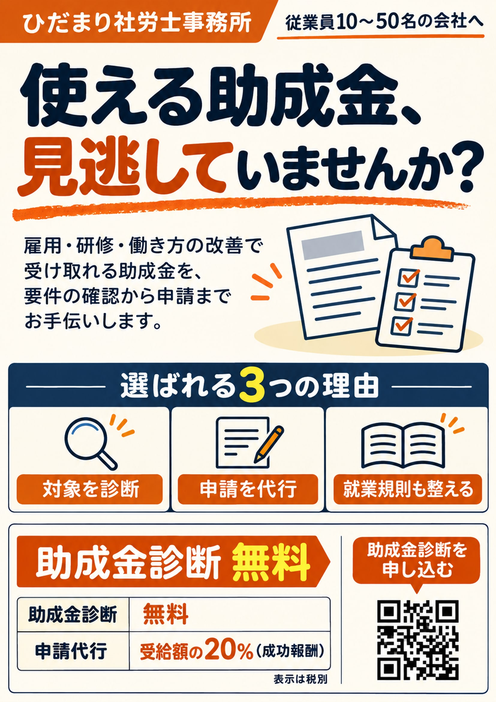
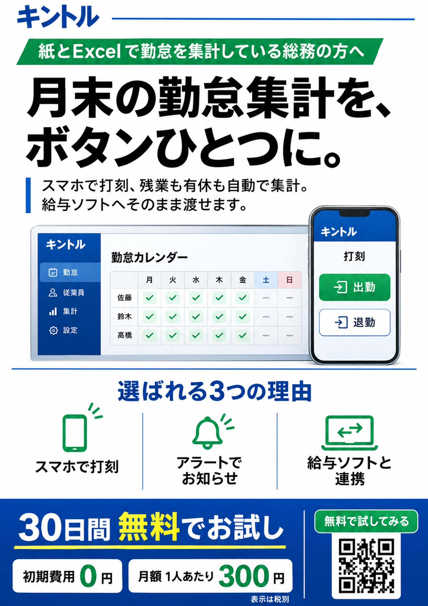
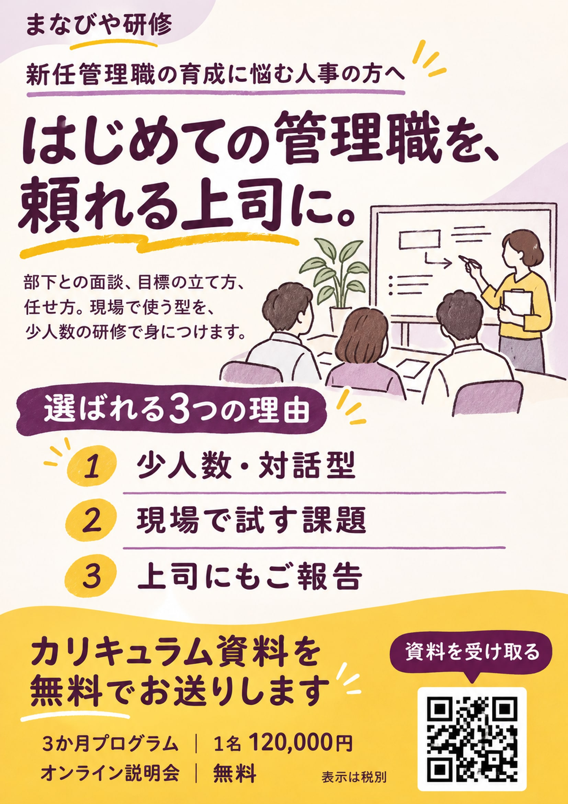
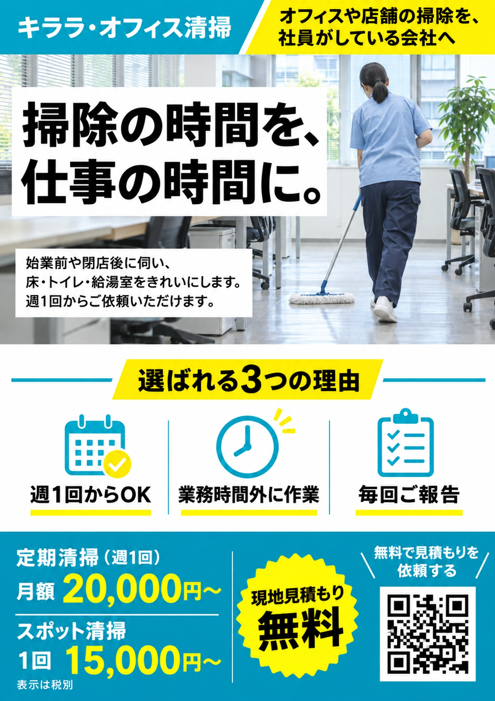
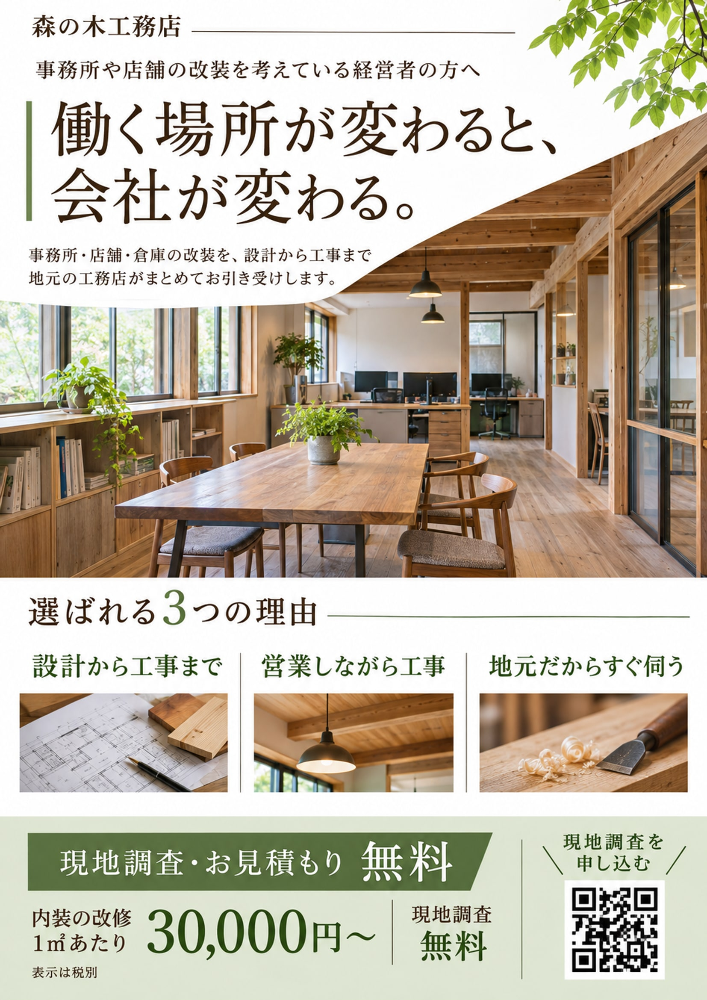
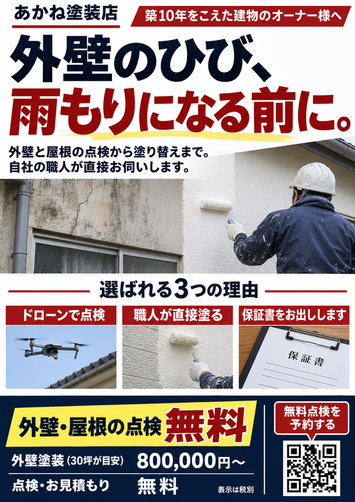

DESIGN 01
会計事務所
編集風・深緑と金
開く順に見る →
DESIGN 02
社会保険労務士
親しみのあるオレンジ
開く順に見る →
DESIGN 03
勤怠管理クラウド
機能を整理した青
開く順に見る →DESIGN 04
ホームページ制作
文字を効かせた黒と朱色
開く順に見る →DESIGN 05
人材紹介
写真を使った紺と黄
開く順に見る →
DESIGN 06
社員研修
手描き図解・紫と黄
開く順に見る →
DESIGN 07
オフィス清掃
清潔感のある水色
開く順に見る →
DESIGN 08
工務店（事務所・店舗の改装）
建築誌のような余白
開く順に見る →
DESIGN 09
外壁・屋根塗装
力強い地域密着型
開く順に見る →DESIGN 10
業務用食材の卸
食材写真・緑と橙
開く順に見る →